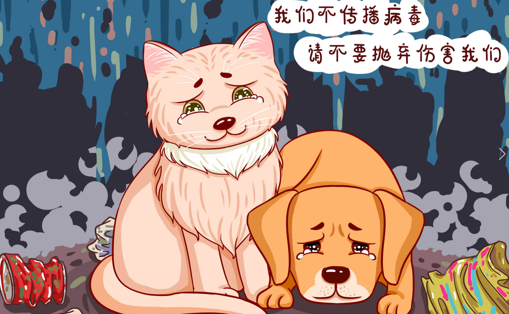
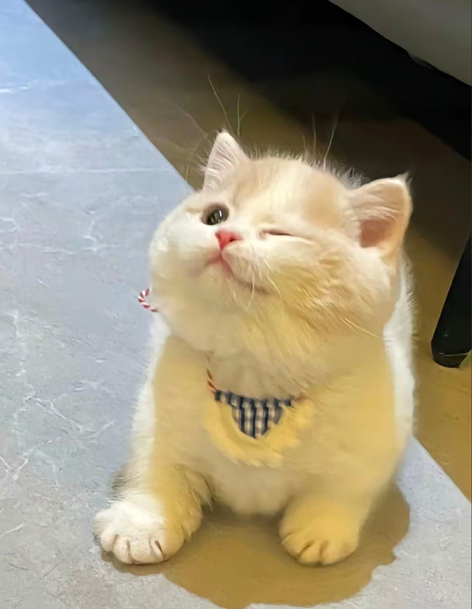
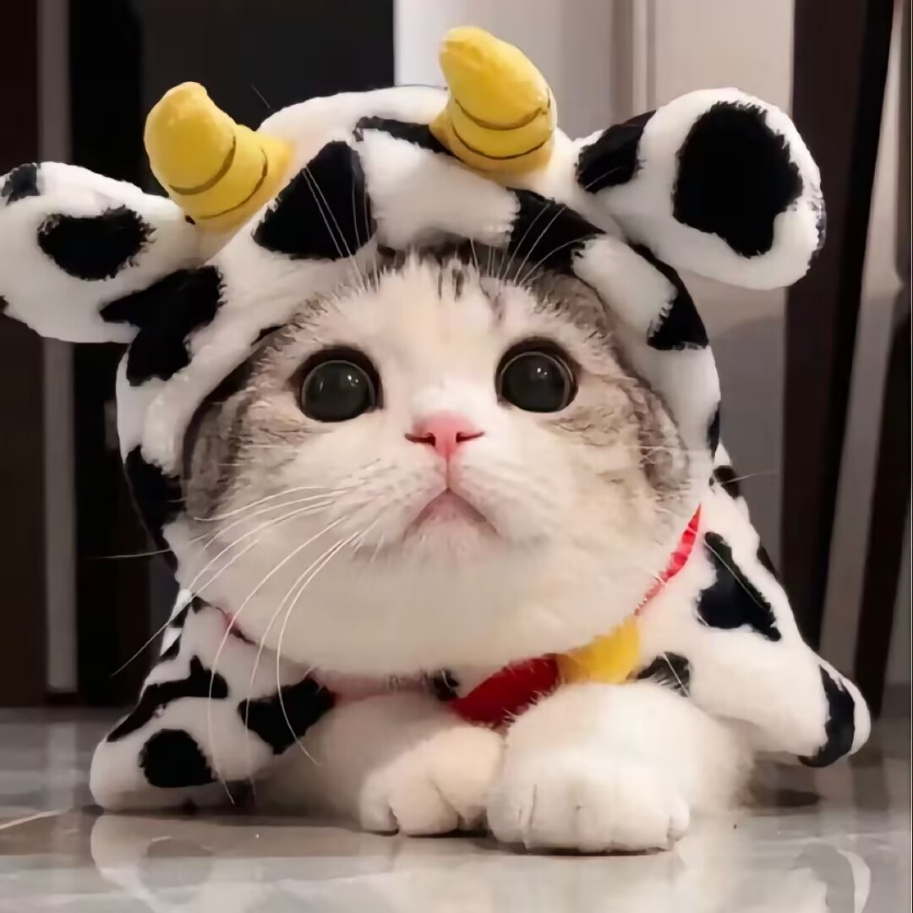
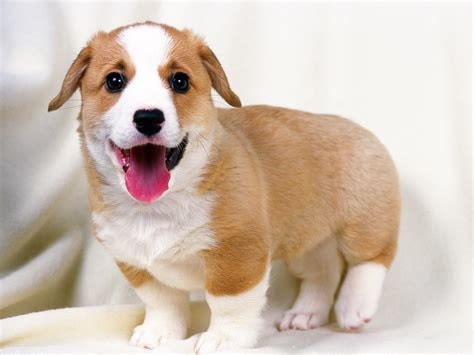
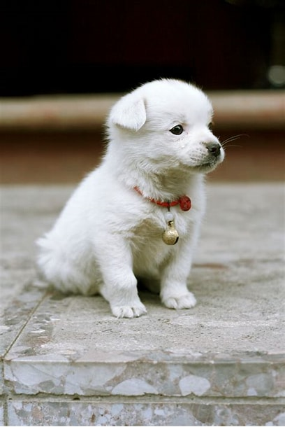

主页
团队展示
宠物领养
宠物救助
注册/登录
互联网流浪动物救助与领养平台

待领养的猫猫

3岁 咪咪

4岁 咖啡
5岁 娄娄
待领养的狗狗

3岁 阿震
8岁 皮皮

5岁 宝宝
关于我们
平台简介
互联网流浪动物救助平台（ Internet stray animal rescue） 是国内基于互联网打造的流浪动物救助平台，助力于保护致力于流浪动物保护事业。以珍爱生命、倡导精神文明和发扬人道主义为思想基础，以保护流浪动物、维护流浪动物的生存权利和不受虐待的权利、以及改善和提高小动物的生命条件、饲养水平为宗旨，坚决反对任何虐待、残害流浪动物的行为和思想，为全国流浪动物救助组织及救助人提供专业化救助服务及专项救助物资，为中国流浪动物救助事业打下坚实的基础。
从未更改的信仰
我们的理想是崇高而现实的，我们的任务是光荣而艰辛的，我们的道理是漫长而荆棘丛生的。但我们坚信：在以科学、文明、民主、自由为主旋律的二十一世纪的社会生活中，保护环境、人与自然、人与动物应和谐相处的思想，尊重生命、珍惜生命的思想，必将成为人们的共识，并成为推动中国的动物保护事业发展壮大的巨大力量。